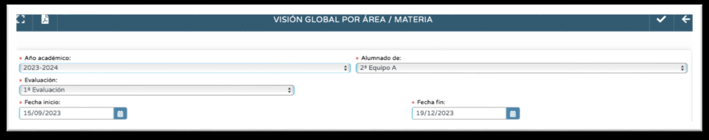
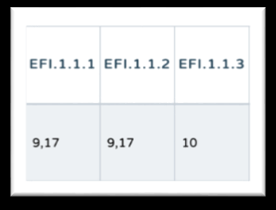
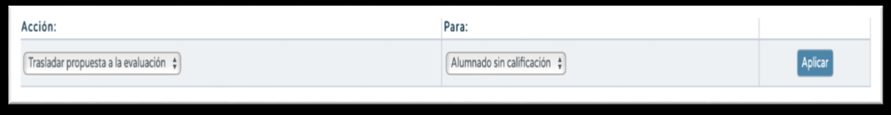
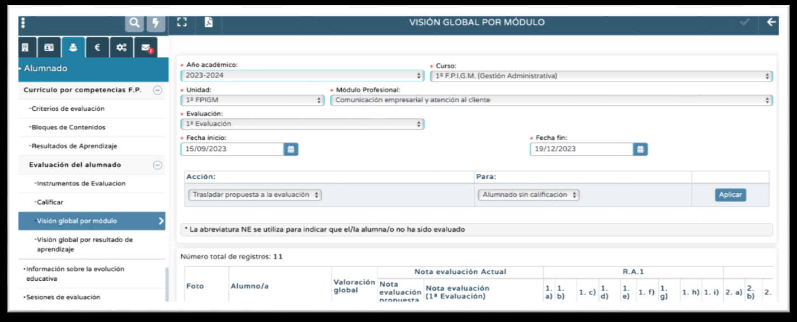

5.2. Visión Global por Área Materia.
Dicha pantalla nos mostrará la calificación de los Criterios evaluados en el tramo de fechas desplegado en función de la convocatoria seleccionada (Vídeo de apoyo). Los profesores tutores/as, al entrar en la pantalla tendrán que elegir entre:
a. Alumnado de tutoría. Esta entrada es para desempeñar la labor como tutor/a, no para evaluar, por tanto:
- El botón de Aceptar de arriba a la derecha aparece deshabilitado, no existiendo la posibilidad de trasladar la propuesta de calificación a la calificación de la convocatoria.
- Se pueden comprobar las calificaciones criteriales de todas las materias que cursa el
alumnado tutorizado.
b. Resto del alumnado. Con esta entrada podemos evaluar al alumnado al cual impartimos clase en las materias impartidas, por tanto:
- El botón Aceptar está habilitado, existiendo la posibilidad de trasladar la propuesta de calificación a la calificación de la convocatoria.
- Solo existe la posibilidad de entrar a comprobar las calificaciones criteriales y (y trasladar la propuesta en su caso) de las materias impartidas.
(Vídeo de apoyo)
Una vez seleccionada la entrada, seleccionaremos convocatoria, cargándose de esta forma las fechas de inicio y fin de la misma según estén definidas por el equipo directivo en Cursos que usan esta convocatoria. Obsérvese que podremos cambiar la fecha de inicio y de fin; obviamente cambiará la visión de las calificaciones criteriales, conteniendo solo las que estén dentro del tramo seleccionado.

En la tabla que se despliega abajo aparece, para cada alumno/a la calificación definitiva de cada criterio de evaluación.
Si, por ejemplo, el criterio 1.1.1 tiene una calificación de un 9,17 es porque:
a. Ese criterio solo tiene registrada una calificación y es un 9,17.
b. Ese criterio tiene varias calificaciones registradas, está configurado en las programaciones didácticas con Método de Calificación Aritmético, y la media de las calificaciones registradas es un 9,17.
c. Ese criterio tiene varias calificaciones registradas, está configurado en las programaciones didácticas con Método de Calificación Continuo Modo de Cálculo Última, y la última calificación registrada es un 9,17.
d. Ese criterio tiene varias calificaciones registradas, está configurado en las programaciones didácticas con Método de Calificación Continuo Modo de Cálculo Mayor, y la calificación más alta registrada es un 9,17.
Se muestran como criterios No Evaluados aquellos que no tienen ninguna calificación registrada en el tramo de fechas desplegado.
En esta pantalla hay que prestar atención a las columnas Valoración Global, Nota de Evaluación Propuesta y Nota Evaluación (Convocatoria de Evaluación):
a. Valoración Global. Desde mayo de 2024 y, a instancias del Servicio de Ordenación Educativa, el cálculo que Séneca hace para obtener la Valoración Global del Área-Materia, es distinto según las convocatorias de evaluación:
- En las convocatorias de evaluación de seguimiento, 1ª evaluación, 2ª evaluación y 3ª evaluación (en las enseñanzas que tienen 3ª evaluación como pueden ser algunos cursos de Educación Infantil), la Propuesta es la media aritmética de la calificación de todos y cada uno de los Criterios de Evaluación. Para la obtención de esta media los Criterios no Evaluados (NE) son descartados.
- En la convocatoria ordinaria la Propuesta es la media aritmética de la calificación de las Competencias Específicas de cada área-materia-ámbito. La calificación de cada
Competencia Específica se obtiene de la media aritmética de las calificaciones de los Criterios de Evaluación de esa Competencia, descartándose los Criterios NE. Si todos los Criterios de la Competencia Específica están NE la Competencia Específica también estará NE y, por tanto, se descartará para el cálculo de la Propuesta.
b. Nota Evaluación Propuesta. Se hace un redondeo a números enteros de la Valoración Global. El redondeo es hacia abajo hasta 0,49 y hacia arriba de 0,50 hasta 0,99.
c. Nota Evaluación (Convocatoria Evaluación). En esta columna podemos reflejar la calificación definitiva del área-materia-ámbito para esa convocatoria. Está en nuestra decisión aceptar o modificar la Propuesta. Podemos hacerlo alumno/a por alumno/a o globalmente para todo el alumnado pinchando en Aceptar tras dejar marcad la Acción Trasladar Propuesta a la Evaluación Para Alumnado sin Calificación. Aceptando arriba a la derecha ya habremos introducido la calificación final de la convocatoria, no teniéndolo que hacerlo en otra ruta más tradicional (Evaluación-Calificaciones).

SOLO PARA FORMACIÓN PROFESIONALPara los módulos profesionales de todos los ciclos de Formación Profesional las operaciones descritas se encuentran en la pantalla Visión Global por Módulo, la cual encontramos en la ruta Alumnado-Evaluación-Currículo por Competencias FP-Evaluación del Alumnado-Visión Global por Módulo. En este caso la Valoración Global, para todas las convocatorias, se obtiene de la media aritmética de las calificaciones de los Criterios de Evaluación, descartándose los NE.

No obstante, para FP encontramos también la pantalla Visión Global por Resultados de Aprendizaje en la ruta Alumnado-Evaluación-Currículo por Competencias FP-Evaluación del Alumnado-Visión Global por Resultados de Aprendizaje. En esta pantalla la Valoración Global se obtiene de la media aritmética de las calificaciones de los Resultados de Aprendizaje (RA), descartándose los RA NE. La calificación de cada RA se obtiene de la media aritmética de las calificaciones de los Criterios de Evaluación de ese RA, descartándose los Criterios NE.